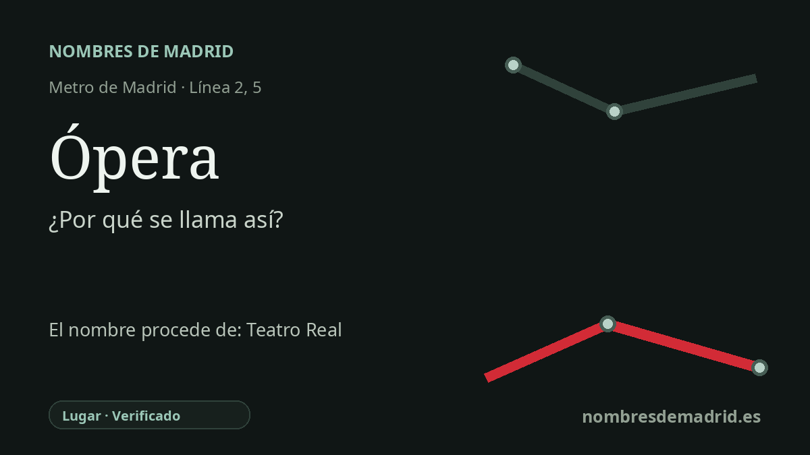

Publicado el · Investigación de Nombres de Madrid · Cómo verificamos cada origen · 7 fuentes consultadas
Respuesta rápida
Ópera toma su nombre del Teatro Real, el gran teatro de ópera de Madrid junto a la plaza de Isabel II. El nombre se adoptó por primera vez en 1931, fue interrumpido por la denominación Fermín Galán durante la Guerra Civil y se recuperó en 1939.
La historia del nombre
El nombre **Ópera** remite al Teatro Real, el teatro de ópera que domina este sector del centro de Madrid junto a la plaza de Isabel II, la plaza de Oriente y el Palacio Real. La estación no se llama así por la ópera como género abstracto, sino por ese hito concreto y por su papel como gran teatro lírico histórico de la ciudad.
Antes del Teatro Real, esta zona estuvo vinculada a los Caños del Peral, un ámbito bajo y abundante en agua, con fuente, lavaderos y después un teatro del mismo nombre. La explicación arqueológica de la Comunidad de Madrid indica que los lavaderos públicos aprovechaban el agua sobrante de la fuente de los Caños del Peral, y que el Coliseo de los Caños del Peral del siglo XVIII se levantó sobre los antiguos lavaderos. El Teatro Real actual se construyó después sobre el solar de aquel teatro anterior, no simplemente sobre un solar vacío de lavaderos.
El Teatro Real fue proyectado desde 1818 por Antonio López Aguado y continuado más tarde por Custodio Teodoro Moreno. Se inauguró oficialmente el 19 de noviembre de 1850, cumpleaños de Isabel II, con *La favorita* de Donizetti. Su identidad operística fue tan clara que, tras el exilio de Isabel II en 1868, llegó a denominarse Teatro Nacional de la Ópera durante una etapa.
La historia del Metro refleja la política de la plaza situada sobre la estación. La estación de la línea 2 abrió el 21 de octubre de 1925 como **Isabel II**, y la del Ramal abrió más tarde ese mismo año con el mismo nombre. Durante la Segunda República pasó a llamarse **Ópera** el 24 de junio de 1931; en la Guerra Civil cambió a **Fermín Galán** el 5 de junio de 1937; y tras la victoria franquista recuperó **Ópera** el 1 de abril de 1939.
El nombre actual, por tanto, está bien fundamentado, pero conviene afinar los detalles. Decir que Ópera es el nombre de la estación solo 'desde 1939' omite el primer periodo Ópera, entre 1931 y 1937. Además, la estación conserva una capa material de historia anterior: en su espacio museístico se muestran restos de la fuente de los Caños del Peral, del acueducto de Amaniel y de la alcantarilla del Arenal, recuperados durante las obras de accesibilidad del siglo XXI.